BAND-01 · Ready in the middle meadow
0.000–3.583s
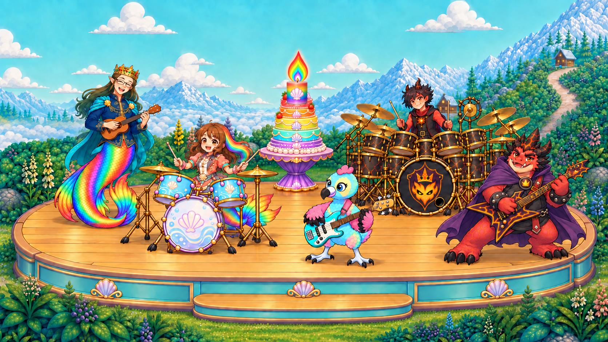
roshan raises her two sticks and looks to her bandmates.
End: everyone is ready; the single candle stays on the supported cake.
BAND-01 / prompt
Candidate · owner approval pendingBAND-02 · Roshan starts the groove
3.583–11.901s
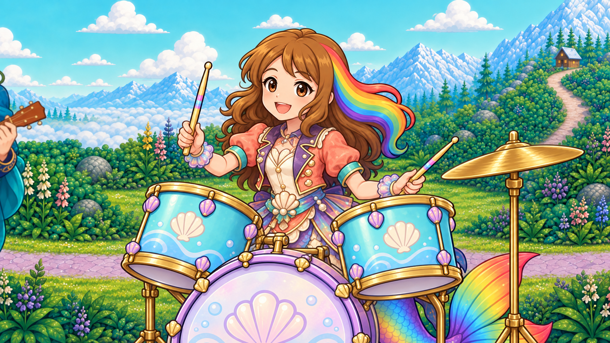
roshan alternates two contacts on the upper tom heads with clear rebounds.
End: both sticks rebound above their drumheads; she keeps a relaxed smile.
BAND-02A / prompt · BAND-02B / prompt
Candidate · owner approval pendingBAND-03 · Daddy answers on ukulele
11.901–18.500s
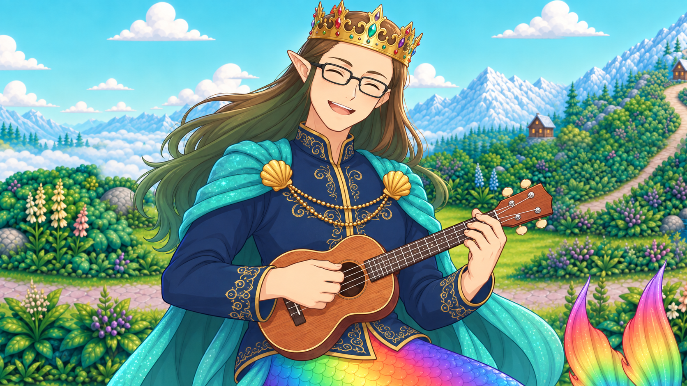
daddy gently strums his four-string ukulele and smiles toward roshan offscreen right.
End: the ukulele stays securely held; his gaze rests on roshan.
BAND-03 / prompt
Candidate · owner approval pendingBAND-04 · Baby Eagle holds the bass line
18.500–25.303s
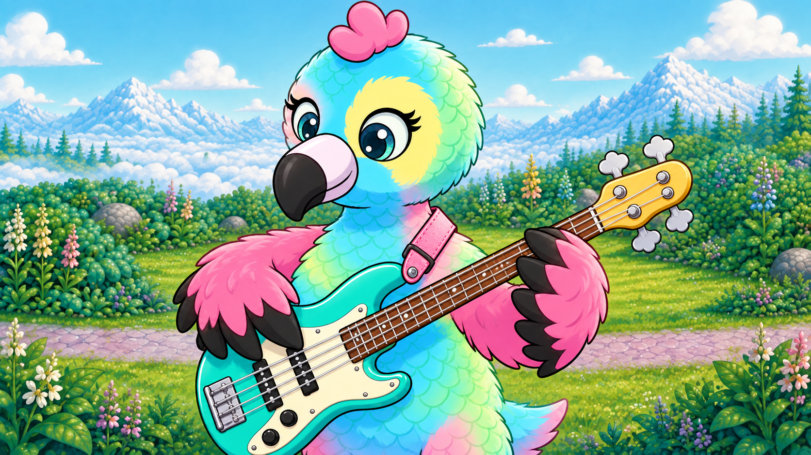
baby eagle plucks the four-string bass with one wing while the other supports the neck.
End: the bass stays secure with four strings connected to four posts and four keys.
BAND-04 / prompt
Candidate · owner approval pendingBAND-05 · King first grindcore break
25.303–31.062s
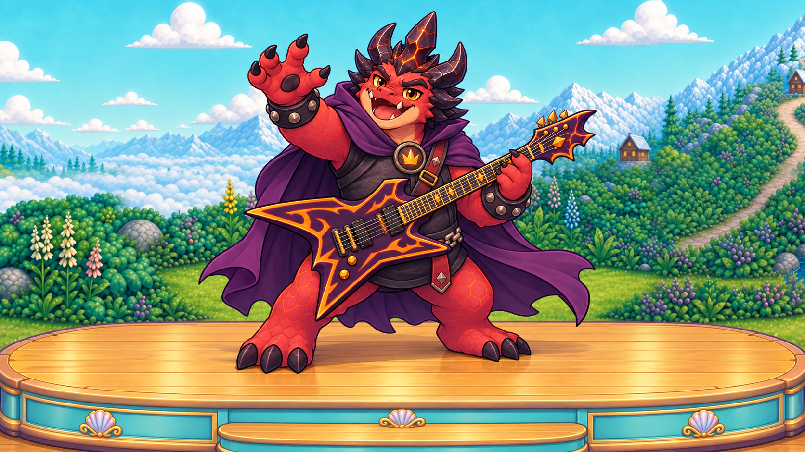
the king leans into a theatrical lead-guitar flourish and open-mouth growl.
End: the king returns upright with his guitar strapped; the candle has not moved.
BAND-05 / prompt
Candidate · owner approval pendingBAND-06 · Roshan answers without fear
31.062–40.000s
roshan answers with two tom contacts and one light cymbal contact.
End: the cymbal settles as she resumes her cheerful groove.
BAND-06A / prompt · BAND-06B / prompt
Candidate · owner approval pendingBAND-07 · Family call and response
40.000–48.268s
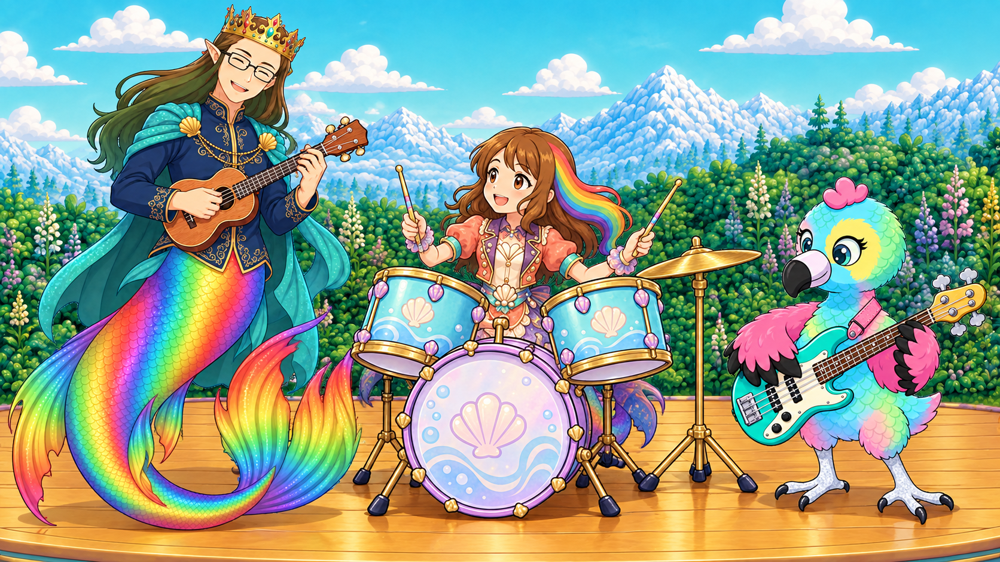
roshan cues daddy and baby eagle with a small nod; they answer on ukulele and bass.
End: all three share the groove without leaving their places.
BAND-07A / prompt · BAND-07B / prompt
Candidate · owner approval pendingBAND-08 · Prince second grindcore break
48.268–54.027s
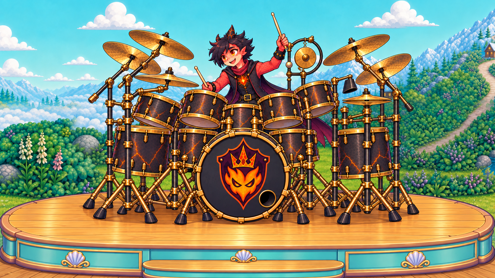
the prince performs a two-stick fill around his many toms then taps a cymbal.
End: both sticks rebound; the single kick drum and crowned-flame crest remain unchanged.
BAND-08 / prompt
Candidate · owner approval pendingBAND-09 · Everyone finds the groove again
54.027–76.000s
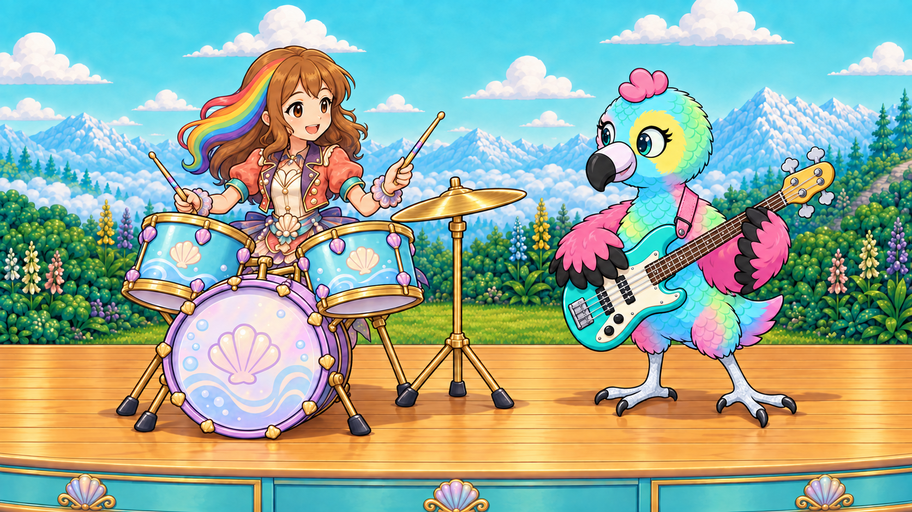
roshan keeps a gentle tom pulse while baby eagle answers with a bass pluck.
End: roshan and baby eagle exchange a happy glance, still playing securely.
BAND-09A / prompt · BAND-09B / prompt · BAND-09C / prompt
Candidate · owner approval pendingBAND-10 · Roshan completes her phrase
76.000–83.060s
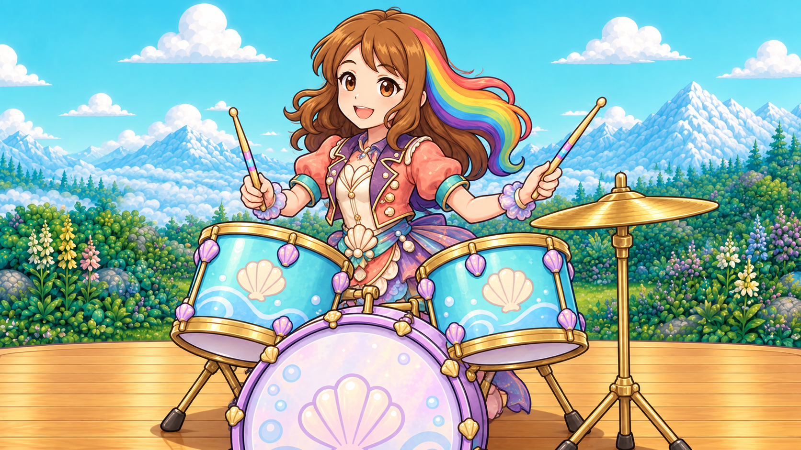
roshan lands a satisfying final tom contact then raises both sticks in delight.
End: roshan is pleased with her successful phrase; the candle still belongs to her.
BAND-10 / prompt
Candidate · owner approval pendingBAND-11 · Ember final interruption
83.060–91.000s
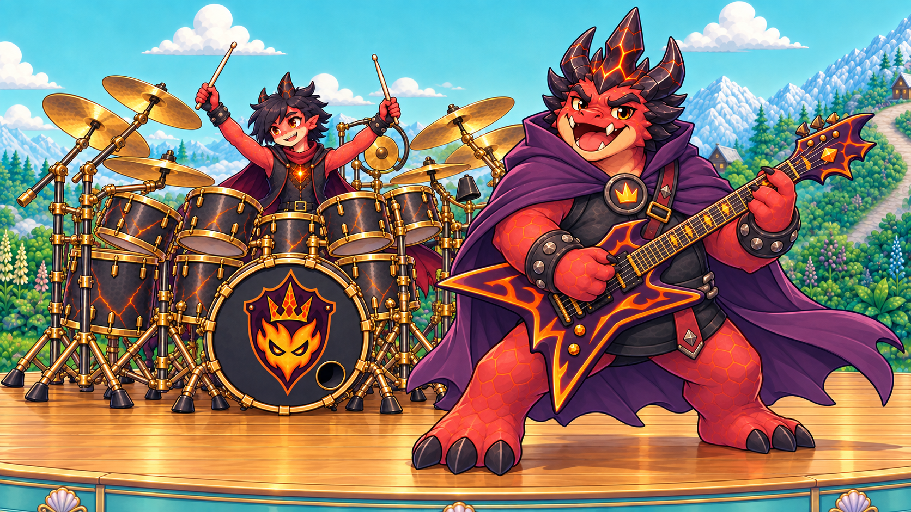
the king strums a final flourish as the prince lands a two-stick fill.
End: their instruments settle; the king looks toward the offscreen candle.
BAND-11 / prompt
Candidate · owner approval pendingBAND-12 · The King cheats
91.000–97.000s
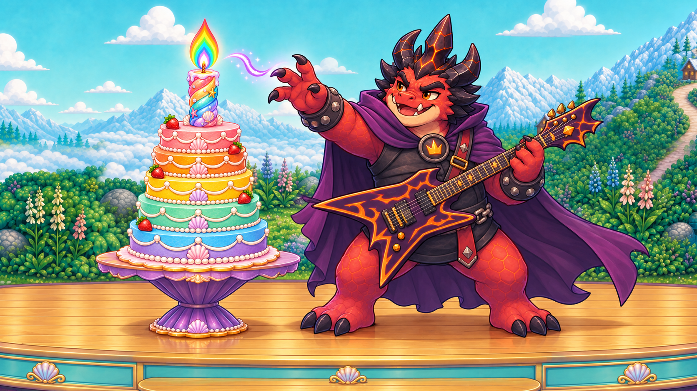
the king's royal magic lifts the one lit pillar candle from the intact cake into his free palm.
End: one candle rests in the king's palm; its former place on the cake is empty.
BAND-12 / prompt
Candidate · owner approval pendingBAND-13 · The Prince objects
97.000–103.000s
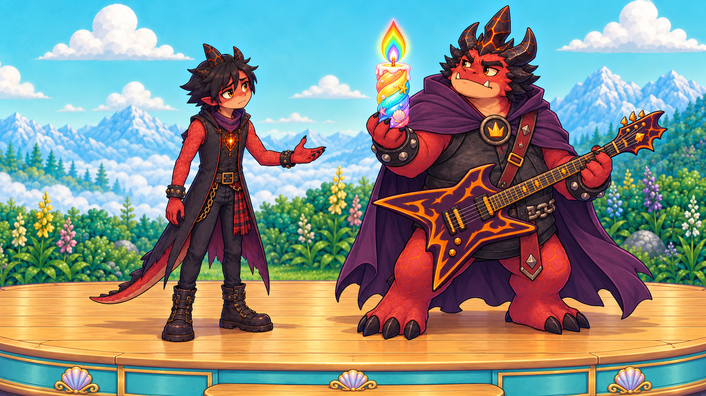
the prince appeals with one empty open hand; the king turns away with the candle and the disappointed prince follows.
End: king and prince leave frame together with the single candle; the guitar stays strapped.
BAND-13 / prompt
Candidate · owner approval pendingBAND-14 · Friends stay together
103.000–109.000s
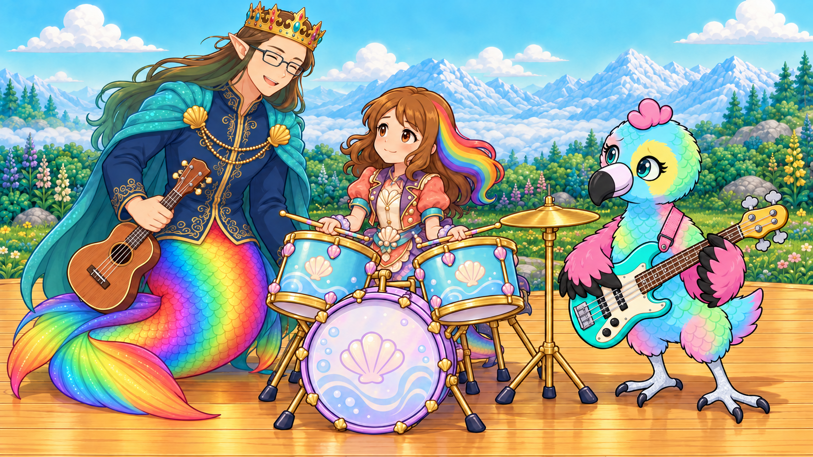
daddy leans gently toward roshan; baby eagle moves a small step closer as she looks up.
End: roshan has her friends beside her; instruments and earned cake remain safe.
BAND-14 / prompt
Candidate · owner approval pending